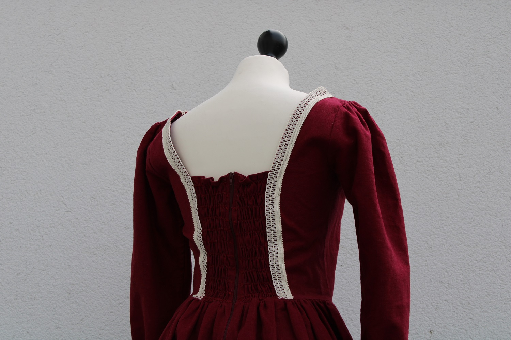
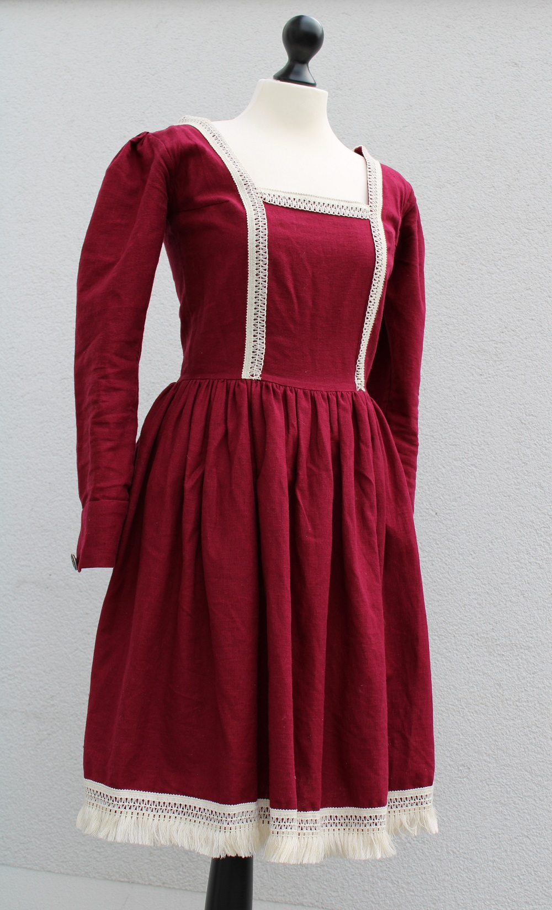
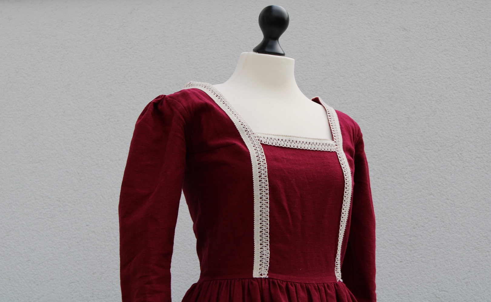
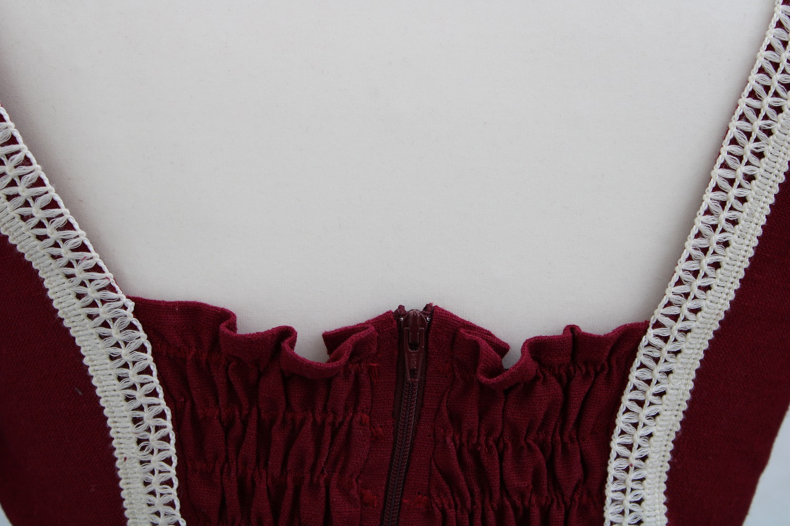
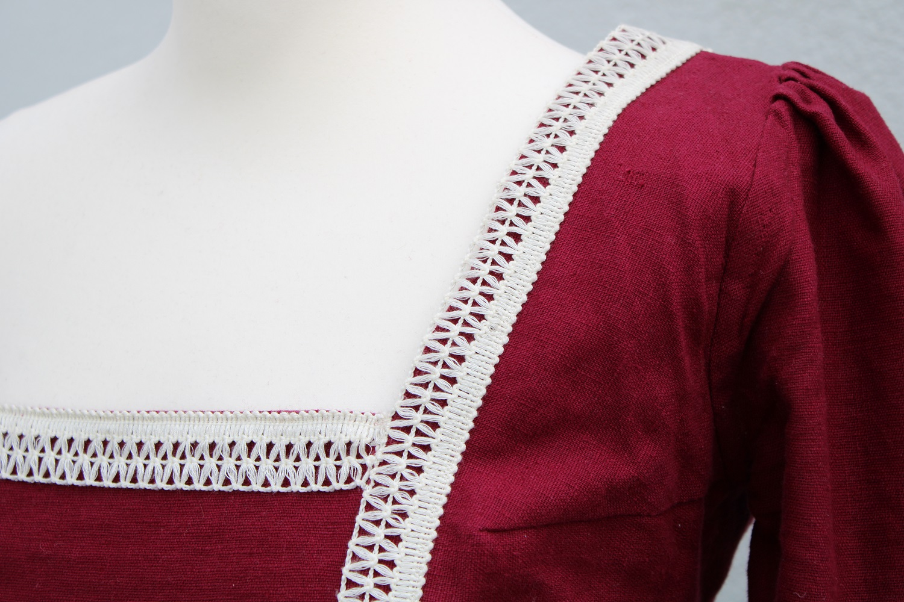
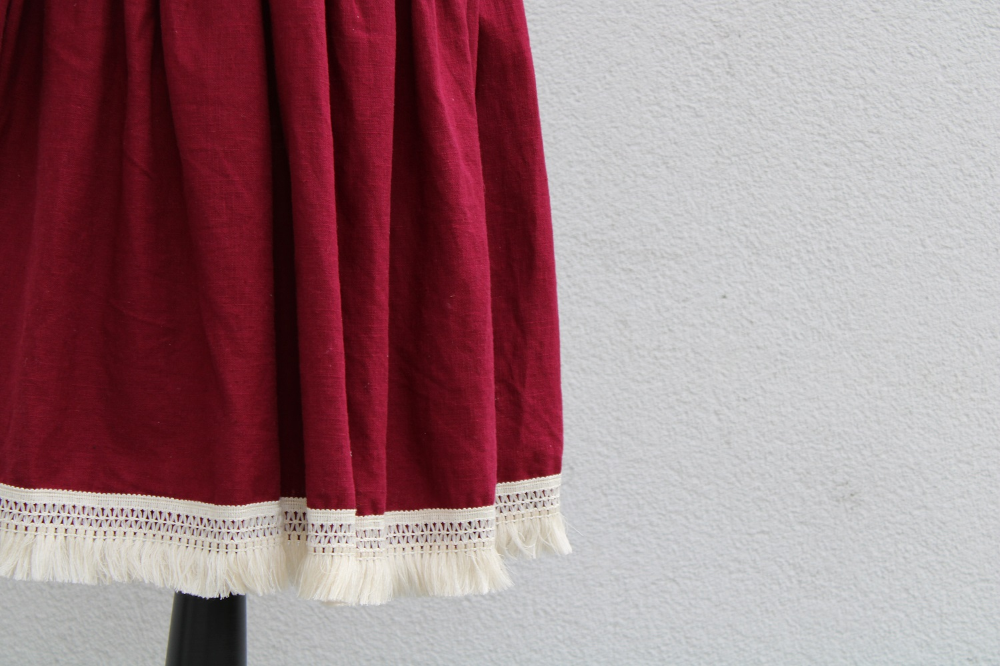

LENA KAHLE
HOME
ABOUT
Renaissance Fair Dress
When I designed this dress, I wanted it to be inspired by the (partially) historical dresses worn at renaissance fairs.
The pattern is self-drafted. I used a burgundy linen and
this lace in off-white from Stoff & Stil.
     